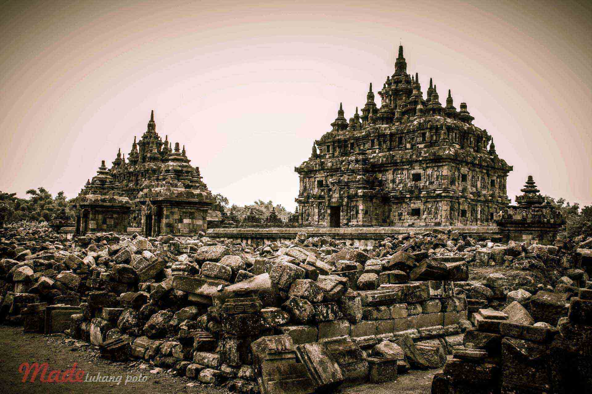
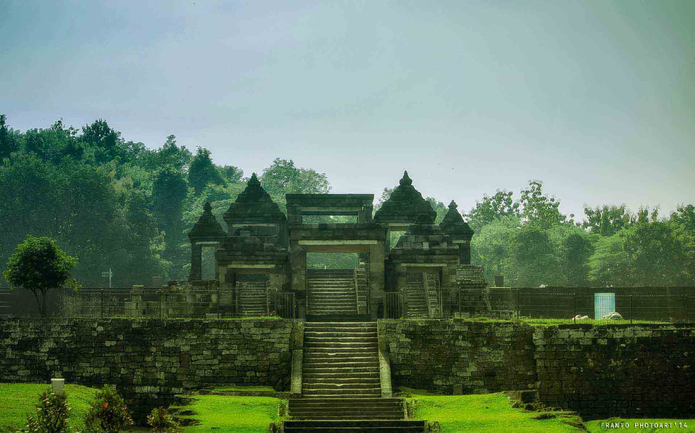
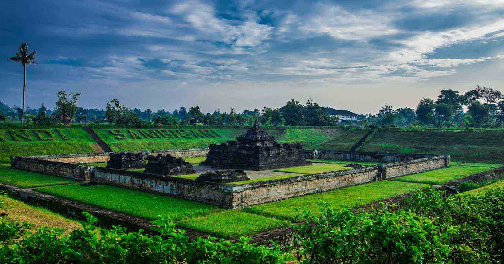

Built In Holy Places to glorify Buddhism and became Religious Shrine Up Now
BOROBUDUR TEMPLE
Perfect Combination between grandeur and Irregularity, Neat Simultaneously Messy
SEWU TEMPLE

6.5 Meters in Subsurface Soil Found After Buried lava of Mount Merapi During the Hundred Years
SAMBISARI TEMPLE

Yogyakarta, Indonesia
PRAMBANAN TEMPLE

The Majestic Palace Filled Mystical Aura, was established as a place for Menyepi and Focusing on the Spiritual Life.
PALACE QUEEN BOKO